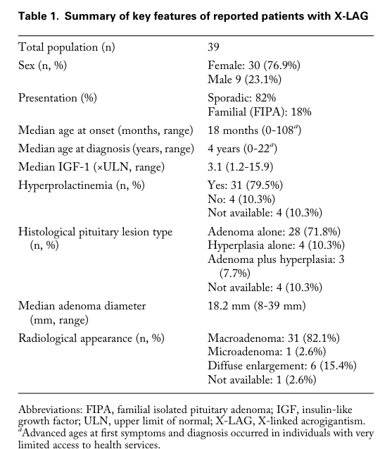

GPR101-related pituitary adenoma 2 is a growth hormone excess pituitary adenoma or hyperplasia syndrome primarily driven by GPR101 copy-number gain. A reported recurrent GPR101 p.E308D variant is kept as a provisional extension rather than the main causal model. The mechanism is distinct from AIP two-hit tumor suppression: GPR101 acts as a dosage-driven GPCR entry point into the somatotroph cAMP/PKA overactivation module.
Ask a research question about GPR101-related pituitary adenoma 2. OpenScientist will conduct autonomous deep research using the Disorder Mechanisms Knowledge Base and PubMed literature (typically 10-30 minutes).
Do not include personal health information in your question. Questions and results are cached in your browser's local storage.
name: GPR101-related pituitary adenoma 2
creation_date: "2026-06-03T00:00:00Z"
category: Genetic
categories:
- Endocrine Neoplasia
- Genomic Disorder
parents:
- pituitary gland adenoma
disease_term:
preferred_term: GPR101-related pituitary adenoma 2
synonyms:
- Pituitary adenoma 2
- X-linked acrogigantism
- X-LAG
mappings:
mondo_mappings:
- term:
id: MONDO:0006373
label: pituitary gland adenoma
mapping_predicate: skos:closeMatch
mapping_source: MONDO
mapping_justification: >-
Closest available MONDO grouping term for the GPR101-related pituitary
adenoma/acrogigantism spectrum; a gene-specific PITA2 term is not
represented in the local ontology snapshot.
description: >-
GPR101-related pituitary adenoma 2 is a growth hormone excess pituitary
adenoma or hyperplasia syndrome primarily driven by GPR101 copy-number gain.
A reported recurrent GPR101 p.E308D variant is kept as a provisional extension
rather than the main causal model. The mechanism is distinct from AIP two-hit
tumor suppression: GPR101 acts as a dosage-driven GPCR entry point into the
somatotroph cAMP/PKA overactivation module.
references:
- reference: PMID:25470569
title: "Gigantism and acromegaly due to Xq26 microduplications and GPR101 mutation."
findings:
- statement: >-
Xq26.3 microduplication and GPR101 overexpression are associated with
early-childhood growth hormone excess, pituitary macroadenoma or
hyperplasia, and X-linked acrogigantism.
- statement: >-
Recurrent GPR101 p.E308D variants were reported mostly in acromegaly
tumor tissue, and mutant GPR101 increased cAMP signaling, growth hormone
release, and proliferation in GH3 pituitary cells.
- reference: PMID:27245663
title: "Germline or somatic GPR101 duplication leads to X-linked acrogigantism: a clinico-pathological and genetic study."
findings:
- statement: >-
Germline or somatic GPR101 duplication is sufficient for X-linked
acrogigantism and implicates GPR101 as the causative gene within Xq26.3.
- statement: >-
Acromegaly patients did not show increased prevalence of the c.924G>C
(p.E308D) GPR101 variant compared with public databases.
- reference: PMID:25712922
title: "X-linked acrogigantism syndrome: clinical profile and therapeutic responses."
findings:
- statement: >-
X-LAG begins in infancy, shows GH/IGF1 and usually prolactin
hypersecretion from pituitary macroadenoma or hyperplasia, and is
difficult to control with somatostatin analogs alone.
- reference: PMID:26982009
title: "Somatic GPR101 Duplication Causing X-Linked Acrogigantism (XLAG)-Diagnosis and Management."
findings:
- statement: >-
Somatic mosaic GPR101 duplication can cause a typical XLAG phenotype even
when peripheral blood testing is negative.
- reference: PMID:38696651
title: "The Genetic Pathophysiology and Clinical Management of the TADopathy, X-Linked Acrogigantism."
findings:
- statement: >-
X-LAG can be transmitted from affected mothers to sons, is resistant to
somatostatin analogs, and often responds to pegvisomant.
inheritance:
- name: X-linked dominant
inheritance_term:
preferred_term: X-linked dominant inheritance
term:
id: HP:0001423
label: X-linked dominant inheritance
description: >-
Familial X-LAG/PITA2 follows dominant X-linked transmission through affected
female carriers, while simplex cases can be de novo or somatic mosaic.
evidence:
- reference: PMID:25712922
reference_title: "X-linked acrogigantism syndrome: clinical profile and therapeutic responses."
supports: SUPPORT
evidence_source: HUMAN_CLINICAL
snippet: >-
All sporadic cases had unique duplications and the inheritance pattern in
two families was dominant, with all Xq26.3 duplication carriers being
affected.
explanation: >-
This supports dominant inheritance of the Xq26.3 duplication in reported
familial X-LAG kindreds.
- reference: PMID:38696651
reference_title: "The Genetic Pathophysiology and Clinical Management of the TADopathy, X-Linked Acrogigantism."
supports: SUPPORT
evidence_source: HUMAN_CLINICAL
snippet: >-
X-LAG has been seen in 3 families due to transmission of the duplication
from affected mothers to sons.
explanation: >-
This supports the X-linked maternal transmission pattern for familial
cases.
progression:
- phase: Early childhood growth hormone excess phase
age_range: infancy to early childhood
notes: >-
Xq26.3 microduplication carriers in the discovery cohort had disease onset
during early childhood, often with rapid growth during infancy before
detection of pituitary hyperplasia or adenoma.
evidence:
- reference: PMID:25470569
reference_title: "Gigantism and acromegaly due to Xq26 microduplications and GPR101 mutation."
supports: SUPPORT
evidence_source: HUMAN_CLINICAL
snippet: >-
All the patients had disease onset during early childhood.
explanation: >-
This supports early childhood onset as a characteristic timing for the
X-LAG/GPR101 duplication presentation.
genetic:
- name: GPR101
gene_term:
preferred_term: GPR101
term:
id: hgnc:14963
label: GPR101
relationship_type: CAUSATIVE
variant_origin: GERMLINE_AND_SOMATIC
association: >-
Xq26.3 copy-number gain including GPR101 causes X-linked acrogigantism.
Recurrent GPR101 p.E308D variants were reported in acromegaly, but later
cohort data did not support increased prevalence, so point-variant
causality is modeled as provisional rather than as the core PITA2 mechanism.
evidence:
- reference: PMID:25470569
reference_title: "Gigantism and acromegaly due to Xq26 microduplications and GPR101 mutation."
supports: SUPPORT
evidence_source: HUMAN_CLINICAL
snippet: >-
Duplication of GPR101 probably causes X-LAG.
explanation: >-
The discovery paper identifies GPR101 dosage as the likely causal gene in
the Xq26.3 duplication syndrome.
pathophysiology:
- name: GPR101 copy-number gain
description: >-
GPR101 is the explicit gene-level entry point for PITA2. Germline or
post-zygotic Xq26.3 copy-number gain increases GPR101 dosage and is the
established causal route for X-linked acrogigantism.
role: trigger
gene:
preferred_term: GPR101
modifier: INCREASED
term:
id: hgnc:14963
label: GPR101
genetic_context:
gene:
preferred_term: GPR101
term:
id: hgnc:14963
label: GPR101
variant_origin: GERMLINE_AND_SOMATIC
allelic_events:
- COPY_NUMBER_GAIN
functional_impact_category: GAIN_OF_FUNCTION
description: >-
GPR101 is affected by germline or somatic dosage gain in X-linked
acrogigantism.
locations:
- preferred_term: pituitary gland
term:
id: UBERON:0000007
label: pituitary gland
evidence:
- reference: PMID:25470569
reference_title: "Gigantism and acromegaly due to Xq26 microduplications and GPR101 mutation."
supports: SUPPORT
evidence_source: HUMAN_CLINICAL
snippet: >-
We observed microduplication on chromosome Xq26.3 in samples from 13
patients with gigantism; of these samples, 4 were obtained from members
of two unrelated kindreds, and 9 were from patients with sporadic cases.
explanation: >-
This supports Xq26.3 duplication as the recurrent genomic event in
childhood-onset GPR101-related disease.
- reference: PMID:27245663
reference_title: "Germline or somatic GPR101 duplication leads to X-linked acrogigantism: a clinico-pathological and genetic study."
supports: SUPPORT
evidence_source: HUMAN_CLINICAL
snippet: >-
In conclusion, XLAG can result from germline or somatic duplication of
GPR101.
explanation: >-
This replication/extension cohort supports both inherited and somatic
GPR101 duplication as the causal genetic context for XLAG.
- reference: PMID:27245663
reference_title: "Germline or somatic GPR101 duplication leads to X-linked acrogigantism: a clinico-pathological and genetic study."
supports: SUPPORT
evidence_source: HUMAN_CLINICAL
snippet: >-
Duplication of GPR101 alone is sufficient for the development of XLAG,
implicating it as the causative gene within the Xq26.3 region.
explanation: >-
This directly supports GPR101 copy-number gain, not the broader duplicated
interval, as sufficient for XLAG.
downstream:
- target: GPR101-driven adenylate cyclase-activating GPCR signaling
description: >-
Increased GPR101 dosage or activity increases GPCR signaling capacity
upstream of cAMP production.
causal_link_type: DIRECT
- name: Reported GPR101 p.E308D variant association
description: >-
The GPR101 p.E308D missense variant was reported in a subset of acromegaly
cases and showed activity in GH3 cell assays, but a later cohort did not
find increased prevalence in acromegaly. It is therefore retained as a
provisional association rather than used as the main PITA2 causal entry
point.
role: provisional_trigger
mechanism_confidence: PROVISIONAL
gene:
preferred_term: GPR101
term:
id: hgnc:14963
label: GPR101
genetic_context:
gene:
preferred_term: GPR101
term:
id: hgnc:14963
label: GPR101
variant_origin: GERMLINE_AND_SOMATIC
allelic_events:
- MISSENSE_VARIANT
functional_impact_category: UNKNOWN
description: >-
Reported p.E308D observations include tumor and constitutive DNA contexts,
but population enrichment and clinical causality remain unresolved.
evidence:
- reference: PMID:25470569
reference_title: "Gigantism and acromegaly due to Xq26 microduplications and GPR101 mutation."
supports: SUPPORT
evidence_source: HUMAN_CLINICAL
snippet: >-
We identified a recurrent GPR101 mutation (p.E308D) in 11 of 248
patients with acromegaly, with the mutation found mostly in tumors.
explanation: >-
This supports the original report of a recurrent p.E308D observation in
acromegaly, mostly in tumor DNA.
- reference: PMID:27245663
reference_title: "Germline or somatic GPR101 duplication leads to X-linked acrogigantism: a clinico-pathological and genetic study."
supports: REFUTE
evidence_source: HUMAN_CLINICAL
snippet: >-
did not have an increased prevalence of the c.924G > C (p.E308D) GPR101
variant compared to public databases.
explanation: >-
This later cohort argues against p.E308D being a common or clearly
enriched acromegaly driver.
- name: GPR101-driven adenylate cyclase-activating GPCR signaling
description: >-
GPR101 encodes a GPCR that can couple to stimulatory G protein signaling,
providing a gene-explicit route into adenylate cyclase activation and cAMP
pathway overactivation.
role: upstream_effector
cell_types:
- preferred_term: somatotroph
term:
id: CL:0002312
label: somatotroph
- preferred_term: mammotroph
term:
id: CL:0002311
label: mammotroph
gene:
preferred_term: GPR101
modifier: INCREASED
term:
id: hgnc:14963
label: GPR101
molecular_functions:
- preferred_term: GPR101 G protein-coupled receptor activity
modifier: INCREASED
term:
id: GO:0004930
label: G protein-coupled receptor activity
- preferred_term: adenylate cyclase activator activity
modifier: INCREASED
term:
id: GO:0010856
label: adenylate cyclase activator activity
biological_processes:
- preferred_term: adenylate cyclase-activating GPCR signaling
modifier: INCREASED
term:
id: GO:0007189
label: adenylate cyclase-activating G protein-coupled receptor signaling pathway
evidence:
- reference: PMID:25470569
reference_title: "Gigantism and acromegaly due to Xq26 microduplications and GPR101 mutation."
supports: SUPPORT
evidence_source: HUMAN_CLINICAL
snippet: >-
Only one of these genes, GPR101, which encodes a G-protein-coupled
receptor, was overexpressed in patients' pituitary lesions.
explanation: >-
This explicitly identifies GPR101 as the overexpressed GPCR in affected
pituitary lesions.
- reference: PMID:25470569
reference_title: "Gigantism and acromegaly due to Xq26 microduplications and GPR101 mutation."
supports: SUPPORT
evidence_source: IN_VITRO
snippet: >-
Moreover, we showed that GPR101 can strongly activate the cAMP pathway,
for which the mitogenic effects in pituitary somatotropes are well
established.
explanation: >-
This connects GPR101 activity to cAMP pathway activation in the
somatotroph tumor context.
downstream:
- target: Increased cAMP/PKA signaling in somatotrophs
description: >-
Adenylate cyclase-activating GPCR signaling increases cAMP availability
and PKA signaling in somatotroph-lineage cells.
causal_link_type: DIRECT
- name: Increased cAMP/PKA signaling in somatotrophs
conforms_to: somatotroph_camp_pka_overactivation#Increased cAMP/PKA signaling in somatotrophs
description: >-
GPR101 activation converges on the shared somatotroph cAMP/PKA signaling
module, matching the downstream segment also reached by GNAS activation and
AIP loss through different entry points.
role: central_effector
cell_types:
- preferred_term: somatotroph
term:
id: CL:0002312
label: somatotroph
biological_processes:
- preferred_term: cAMP/PKA signal transduction
modifier: INCREASED
term:
id: GO:0141156
label: cAMP/PKA signal transduction
evidence:
- reference: PMID:25470569
reference_title: "Gigantism and acromegaly due to Xq26 microduplications and GPR101 mutation."
supports: SUPPORT
evidence_source: IN_VITRO
snippet: >-
As in the construct containing the nonmutant receptor, the two mutant
constructs resulted in increased cAMP signaling in GH3 cells in an in
vitro reporter assay, both at baseline and in the presence of 10 μM
forskolin, a direct stimulator of adenylyl cyclase (Fig. 4F).
explanation: >-
This supports increased cAMP signaling downstream of activating GPR101
variants in pituitary GH3 cells.
downstream:
- target: Increased growth hormone secretion
description: >-
Increased cAMP/PKA signaling increases secretory drive in
somatotroph-lineage pituitary cells.
causal_link_type: DIRECT
- target: Somatotroph/lactotroph pituitary hyperplasia or adenoma
description: >-
Increased cAMP/PKA signaling supports proliferation and adenoma or
hyperplasia formation in GH/PRL-lineage pituitary tissue.
causal_link_type: DIRECT
- name: Increased growth hormone secretion
conforms_to: somatotroph_camp_pka_overactivation#Increased growth hormone secretion
description: >-
Somatotroph-lineage cells release excess growth hormone downstream of
GPR101-driven cAMP/PKA pathway activation.
role: consequence
cell_types:
- preferred_term: somatotroph
term:
id: CL:0002312
label: somatotroph
biological_processes:
- preferred_term: growth hormone secretion
modifier: INCREASED
term:
id: GO:0030252
label: growth hormone secretion
evidence:
- reference: PMID:25470569
reference_title: "Gigantism and acromegaly due to Xq26 microduplications and GPR101 mutation."
supports: SUPPORT
evidence_source: IN_VITRO
snippet: >-
When the mutation was transfected into rat GH3 cells, it led to increased
release of growth hormone and proliferation of growth hormone-producing
cells.
explanation: >-
This directly supports increased GH release downstream of activating
GPR101 in a pituitary cell model.
- name: Somatotroph/lactotroph pituitary hyperplasia or adenoma
conforms_to: somatotroph_camp_pka_overactivation#Somatotroph proliferation and adenoma growth
description: >-
GPR101-related disease produces pituitary macroadenomas or pituitary
hyperplasia, often with somatotroph and mammotroph lineage features.
role: consequence
cell_types:
- preferred_term: somatotroph
term:
id: CL:0002312
label: somatotroph
- preferred_term: mammotroph
term:
id: CL:0002311
label: mammotroph
locations:
- preferred_term: pituitary gland
term:
id: UBERON:0000007
label: pituitary gland
biological_processes:
- preferred_term: cell population proliferation
modifier: INCREASED
term:
id: GO:0008283
label: cell population proliferation
evidence:
- reference: PMID:25470569
reference_title: "Gigantism and acromegaly due to Xq26 microduplications and GPR101 mutation."
supports: SUPPORT
evidence_source: HUMAN_CLINICAL
snippet: >-
Of the 13 patients who underwent surgery, 10 had pituitary macroadenomas
alone (median maximum diameter, 16 mm), and 3 patients had pituitary
hyperplasia, with or without an identified adenoma (Fig. 3H).
explanation: >-
This anchors the downstream proliferative outcome to the pituitary
lesions observed in Xq26.3/GPR101 duplication patients.
phenotypes:
- name: Growth hormone excess
phenotype_term:
preferred_term: Elevated circulating growth hormone concentration
term:
id: HP:0000845
label: Elevated circulating growth hormone concentration
evidence:
- reference: PMID:25470569
reference_title: "Gigantism and acromegaly due to Xq26 microduplications and GPR101 mutation."
supports: SUPPORT
evidence_source: HUMAN_CLINICAL
snippet: >-
Increased secretion of growth hormone leads to gigantism in children and
acromegaly in adults; the genetic causes of gigantism and acromegaly are
poorly understood.
explanation: >-
This frames the clinical syndrome as GH excess causing gigantism or
acromegaly.
- name: Hyperprolactinemia
phenotype_term:
preferred_term: Increased circulating prolactin concentration
term:
id: HP:0000870
label: Increased circulating prolactin concentration
evidence:
- reference: PMID:25470569
reference_title: "Gigantism and acromegaly due to Xq26 microduplications and GPR101 mutation."
supports: SUPPORT
evidence_source: HUMAN_CLINICAL
snippet: >-
As compared with patients who did not have an Xq26.3 microduplication,
those with the microduplication had an earlier median age at the onset of
abnormal growth (12 months vs. 16 years), an increased acceleration in
height, and elevated levels of insulin-like growth factor 1 and prolactin
(Table 1).
explanation: >-
This supports prolactin elevation as part of the Xq26.3/GPR101 duplication
phenotype.
- name: Pituitary macroadenoma or hyperplasia
phenotype_term:
preferred_term: Pituitary macroadenoma
term:
id: HP:0025693
label: Pituitary macroadenoma
evidence:
- reference: PMID:25470569
reference_title: "Gigantism and acromegaly due to Xq26 microduplications and GPR101 mutation."
supports: SUPPORT
evidence_source: HUMAN_CLINICAL
snippet: >-
Of the 13 patients who underwent surgery, 10 had pituitary macroadenomas
alone (median maximum diameter, 16 mm), and 3 patients had pituitary
hyperplasia, with or without an identified adenoma (Fig. 3H).
explanation: >-
This supports large pituitary adenoma or hyperplasia as a common structural
outcome in GPR101-related X-LAG.
- name: Acral overgrowth and coarse facial features
phenotype_term:
preferred_term: Acral overgrowth
term:
id: HP:0033794
label: Acral overgrowth
evidence:
- reference: PMID:25712922
reference_title: "X-linked acrogigantism syndrome: clinical profile and therapeutic responses."
supports: SUPPORT
evidence_source: HUMAN_CLINICAL
snippet: >-
Apart from the increased overall body size, the children had acromegalic
symptoms including acral enlargement and facial coarsening.
explanation: >-
This adds the acromegalic tissue-overgrowth phenotype beyond biochemical
GH excess.
diagnosis:
- name: Xq26.3/GPR101 copy-number testing
diagnosis_term:
preferred_term: molecular genetic testing
term:
id: MAXO:0000533
label: molecular genetic testing
qualifiers:
- predicate:
preferred_term: has participant
term:
id: RO:0000057
label: has participant
value:
preferred_term: GPR101
term:
id: hgnc:14963
label: GPR101
description: >-
Early-onset pituitary gigantism should prompt copy-number testing for
Xq26.3/GPR101 duplication; suspected mosaic cases may require tissue beyond
peripheral blood.
results: >-
Detection of germline or mosaic GPR101 duplication supports the molecular
diagnosis.
evidence:
- reference: PMID:27245663
reference_title: "Germline or somatic GPR101 duplication leads to X-linked acrogigantism: a clinico-pathological and genetic study."
supports: SUPPORT
evidence_source: HUMAN_CLINICAL
snippet: >-
The pathological features of XLAG-associated pituitary adenomas are
typical and, together with the clinical phenotype, should prompt genetic
testing.
explanation: >-
This supports using the XLAG phenotype and pathology to trigger GPR101
duplication testing.
- reference: PMID:26982009
reference_title: "Somatic GPR101 Duplication Causing X-Linked Acrogigantism (XLAG)-Diagnosis and Management."
supports: SUPPORT
evidence_source: HUMAN_CLINICAL
snippet: >-
a negative test for Xq26.3 microduplication or GPR101 duplication on
peripheral blood DNA does not exclude the diagnosis of XLAG because it can
result from a mosaic mutation affecting the pituitary.
explanation: >-
This supports tissue-aware copy-number testing when clinical suspicion
persists despite negative blood testing.
treatments:
- name: Extensive pituitary surgery for local control
description: >-
X-LAG frequently requires surgery for pituitary macroadenoma or hyperplasia,
but extensive resection can produce permanent hypopituitarism.
treatment_term:
preferred_term: surgical procedure
term:
id: MAXO:0000004
label: surgical procedure
target_phenotypes:
- preferred_term: Pituitary macroadenoma
term:
id: HP:0025693
label: Pituitary macroadenoma
target_mechanisms:
- target: Somatotroph/lactotroph pituitary hyperplasia or adenoma
treatment_effect: MODULATES
description: >-
Surgery reduces the proliferative pituitary lesion that produces GH/PRL
excess.
evidence:
- reference: PMID:25712922
reference_title: "X-linked acrogigantism syndrome: clinical profile and therapeutic responses."
supports: SUPPORT
evidence_source: HUMAN_CLINICAL
snippet: >-
Primary neurosurgical control was achieved with extensive anterior
pituitary resection, but postoperative hypopituitarism was frequent.
explanation: >-
This supports neurosurgical control and the associated morbidity in X-LAG.
- name: Somatostatin analog therapy with limited control
description: >-
Somatostatin analogs may be used for GH excess but are often insufficient as
sole therapy in X-LAG, despite SSTR2 expression.
treatment_term:
preferred_term: pharmacotherapy
term:
id: MAXO:0000058
label: pharmacotherapy
target_phenotypes:
- preferred_term: Growth hormone excess
term:
id: HP:0000845
label: Elevated circulating growth hormone concentration
target_mechanisms:
- target: Increased growth hormone secretion
treatment_effect: MODULATES
description: >-
Somatostatin analogs attempt to suppress GH secretion downstream of the
GPR101-driven cAMP/PKA state.
evidence:
- reference: PMID:25712922
reference_title: "X-linked acrogigantism syndrome: clinical profile and therapeutic responses."
supports: SUPPORT
evidence_source: HUMAN_CLINICAL
snippet: >-
Control with somatostatin analogs was not readily achieved despite
moderate to high levels of expression of somatostatin receptor subtype-2
in tumor tissue.
explanation: >-
This supports limited somatostatin analog control as a treatment-relevant
X-LAG feature.
- name: Pegvisomant-based GH receptor blockade
description: >-
Pegvisomant can control IGF1/GH action in X-LAG when surgery and
somatostatin analogs are insufficient, often as part of combination therapy.
treatment_term:
preferred_term: pharmacotherapy
term:
id: MAXO:0000058
label: pharmacotherapy
target_phenotypes:
- preferred_term: Growth hormone excess
term:
id: HP:0000845
label: Elevated circulating growth hormone concentration
evidence:
- reference: PMID:25712922
reference_title: "X-linked acrogigantism syndrome: clinical profile and therapeutic responses."
supports: SUPPORT
evidence_source: HUMAN_CLINICAL
snippet: >-
Postoperative use of adjuvant pegvisomant resulted in control of IGF1 in
all five cases where it was employed.
explanation: >-
This supports pegvisomant as an effective adjuvant in reported X-LAG
cases.
- reference: PMID:38696651
reference_title: "The Genetic Pathophysiology and Clinical Management of the TADopathy, X-Linked Acrogigantism."
supports: SUPPORT
evidence_source: HUMAN_CLINICAL
snippet: >-
Treatment of X-LAG is challenging due to the young patient population and
resistance to somatostatin analogs; the GH receptor antagonist pegvisomant
is often an effective option.
explanation: >-
This recent review supports pegvisomant as a common effective option in
the resistant X-LAG treatment context.
discussions:
- discussion_id: gap_gpr101_pE308D_causality
prompt: >-
Does the reported GPR101 p.E308D missense variant causally drive acromegaly
in any patient subset, or was the original enrichment not reproducible?
kind: KNOWLEDGE_GAP
status: OPEN
attaches_to:
- pathophysiology#Reported GPR101 p.E308D variant association
- pathophysiology#GPR101-driven adenylate cyclase-activating GPCR signaling
rationale: >-
GPR101 duplication is sufficient for X-linked acrogigantism and is the core
PITA2 mechanism. The p.E308D variant has in vitro activity and was reported
in acromegaly, but a later cohort did not find increased prevalence versus
public databases, so the point-variant branch should stay provisional.
evidence:
- reference: PMID:27245663
reference_title: "Germline or somatic GPR101 duplication leads to X-linked acrogigantism: a clinico-pathological and genetic study."
supports: SUPPORT
evidence_source: HUMAN_CLINICAL
snippet: >-
did not have an increased prevalence of the c.924G > C (p.E308D) GPR101
variant compared to public databases.
explanation: >-
This motivates keeping p.E308D causality as a knowledge gap rather than
folding it into the established duplication mechanism.
X‑linked acrogigantism (X‑LAG) is a rare genetic form of pituitary gigantism in which growth hormone (GH) excess begins before epiphyseal fusion, usually during infancy, and is driven by GPR101 overexpression in pituitary tissue due to Xq26.3 duplications. It commonly presents with mixed GH–prolactin pituitary neuroendocrine tumors (PitNETs; historically “adenomas”) and/or pituitary hyperplasia, resulting in rapid linear growth and markedly elevated GH/IGF‑1 (often with hyperprolactinemia). (daly2024thegeneticpathophysiology pages 1-1, daly2024thegeneticpathophysiology pages 1-2)
Key abstract quote (expert review, 2024): “X-LAG is caused by constitutive or sporadic mosaic duplications at chromosome Xq26.3… around… GPR101…” and “GPR101 is a constitutively active receptor… to promote GH/prolactin hypersecretion.” (daly2024thegeneticpathophysiology pages 1-1)
Not retrieved in current tool context: MONDO, Orphanet, ICD-10/ICD-11, MeSH identifiers.
Most evidence comes from aggregated disease-level resources (reviews and cohorts) plus individual case reports with molecular and pathological detail. (daly2024thegeneticpathophysiology pages 1-1, iacovazzo2016germlineorsomatic pages 2-5, caruso2024casereportmanagement pages 2-4)
Causal lesion: tandem duplications at Xq26.3 involving GPR101 that lead to marked pituitary overexpression of GPR101. (daly2024thegeneticpathophysiology pages 1-2, iacovazzo2016germlineorsomatic pages 2-5)
Dosage sufficiency (primary cohort evidence): a smallest-region case demonstrated that duplication of GPR101 alone is sufficient to cause the disease phenotype. (iacovazzo2016germlineorsomatic pages 2-5, iacovazzo2016germlineorsomatic pages 1-2)
No credible environmental/lifestyle risk factors were identified in the retrieved evidence.
No genetic or environmental protective factors were identified in the retrieved evidence.
No gene–environment interactions were identified in the retrieved evidence.
Representative pediatric case values: random GH 62 ng/mL, IGF‑1 752.1 ng/mL, prolactin 2,656 mIU/L with a pituitary mass 17×12 mm. (caruso2024casereportmanagement pages 2-4)
Common findings include a mixed somatotroph–lactotroph lesion with sinusoidal/lobular architecture and low proliferative indices in most sporadic cases. (iacovazzo2016germlineorsomatic pages 5-7, caruso2024casereportmanagement pages 4-6)
Direct QoL outcome data specific to X‑LAG were not retrieved; however, trials in acromegaly and GH excess commonly assess QoL and symptoms, and pediatric GH excess trials include symptom and QoL measures as endpoints. (NCT03882034 chunk 1, NCT02354508 chunk 2)
GPR101 is described as constitutively active and capable of stimulating GH (and often prolactin) hypersecretion. (daly2024thegeneticpathophysiology pages 1-1, daly2024thegeneticpathophysiology pages 5-6)
No validated modifier genes or epigenetic signatures specific to X‑LAG were identified in the retrieved evidence.
No specific environmental, lifestyle, or infectious contributors were identified in the retrieved evidence; the condition is primarily a structural-variant driven genetic endocrine tumor syndrome. (daly2024thegeneticpathophysiology pages 1-1, iacovazzo2016germlineorsomatic pages 2-5)
1) Xq26.3 duplication reorganizes chromatin and can create a neo‑TAD that places the GPR101 promoter under the influence of ectopic pituitary enhancers, causing massive pituitary GPR101 overexpression. (daly2024chromatinconformationcapture pages 1-2, daly2024chromatinconformationcapture pages 6-7) 2) GPR101 constitutive activity signals through multiple G proteins including Gs and Gq/11, increasing cAMP/PKA and PLCβ/PKC pathway activity, which increases GH secretion (and often PRL). (abboud2020gpr101drivesgrowth pages 8-8, daly2024thegeneticpathophysiology pages 5-6) 3) Resulting chronic GH/IGF‑1 excess in infancy causes rapid linear growth and pituitary adenoma/hyperplasia phenotypes in humans. (daly2024thegeneticpathophysiology pages 1-2, daly2024thegeneticpathophysiology pages 9-10)
Suggested Cell Ontology (CL) terms: - Somatotroph (CL:0002395) - Lactotroph (CL:0002400)
Suggested UBERON terms: - Pituitary gland (UBERON:0000007) - Anterior pituitary gland (UBERON:0002196)
Suggested GO Biological Process terms (examples): - Regulation of hormone secretion - Growth hormone secretion - cAMP-mediated signaling - Protein kinase C-activating signaling pathway
Molecular pathway concepts: Gs/adenylyl cyclase/cAMP/PKA and Gq/PLCβ/PKC axes in pituitary secretory control (abboud2020gpr101drivesgrowth pages 8-8, abboud2020gpr101drivesgrowth pages 2-3)
Population-level incidence/prevalence per 100,000 were not retrieved.
IHC/histology supportive features include GH/PRL expression patterns, Pit‑1 lineage, variable SSTR2/5, and typical low Ki‑67 in most cases. (iacovazzo2016germlineorsomatic pages 5-7)
In a 39-patient compilation, hormonal control at last follow-up was reported in 31/39 (79.5%), but control often requires multiple modalities and comes with high endocrine morbidity. (daly2024thegeneticpathophysiology pages 13-13)
Although carotid sinus invasion is described as infrequent in synthesis cohorts, severe aggressive cases with cavernous sinus invasion and hydrocephalus have been reported. (daly2024thegeneticpathophysiology pages 11-12, naves2016aggressivetumorgrowth pages 2-5)
X‑LAG often requires multimodal therapy because of early age at presentation, high secretory burden, and relative resistance to first-generation somatostatin analogs. (daly2024thegeneticpathophysiology pages 13-13, daly2024thegeneticpathophysiology pages 12-13)
Real-world implementation example: in a 2024 pediatric case, somatostatin analogs and cabergoline did not normalize GH/IGF‑1; pegvisomant reduced IGF‑1 but was complicated by inconsistent control and lipohypertrophy at injection sites. (caruso2024casereportmanagement pages 2-4)
(Trials are not X‑LAG-specific but relevant to pediatric GH excess management.)
No established primary prevention exists because the disorder is driven by structural variants. Prevention is primarily secondary/tertiary: - Secondary prevention: early recognition of accelerated growth in infancy/toddlerhood and rapid biochemical/MRI evaluation. (daly2024thegeneticpathophysiology pages 3-3) - Genetic counseling/prenatal context: incidentally detected GPR101 duplications require careful interpretation; 4C/Hi‑C (or validated predictors) can distinguish neutral vs pathogenic duplications to prevent unnecessary surveillance and anxiety. (daly2024chromatinconformationcapture pages 1-2, daly2024chromatinconformationcapture pages 7-9)
No naturally occurring veterinary disease associations were retrieved.
1) X‑LAG reframed as a “TADopathy”: 2024 Endocrine Reviews synthesizes 10 years of X‑LAG research, emphasizing chromatin architecture disruption and management challenges. Publication date: May 2024. URL: https://doi.org/10.1210/endrev/bnae014 (daly2024thegeneticpathophysiology pages 1-1) 2) Clinical chromatin conformation capture for CNV interpretation: 2024 Genome Medicine demonstrates 4C‑seq/Hi‑C can distinguish pathogenic vs neutral GPR101 duplications for counseling and prenatal interpretation. Publication date: Sep 2024. URL: https://doi.org/10.1186/s13073-024-01378-5 (daly2024chromatinconformationcapture pages 1-2, daly2024chromatinconformationcapture pages 7-9) 3) Detailed pediatric management pathway: 2024 Frontiers in Endocrinology case report provides end-to-end diagnostic and multimodal management, including 4C‑seq evidence of neo‑TAD and medical therapy challenges. Publication date: Feb 2024. URL: https://doi.org/10.3389/fendo.2024.1345363 (caruso2024casereportmanagement pages 2-4)
A quantitative summary table is provided below.
| Topic | Specific data point | Value(s) with units or percentages | Source (first author year, journal) | PMID if known | URL | Evidence type |
|---|---|---|---|---|---|---|
| Genetics/Epidemiology | Proportion of pituitary gigantism cohort with GPR101 duplication/X-LAG | 12/153 patients = 7.8%; females 10/58 = 17.2% of female gigantism cases | Iacovazzo 2016, Acta Neuropathologica Communications (iacovazzo2016germlineorsomatic pages 2-5, iacovazzo2016germlineorsomatic pages 1-2) | https://doi.org/10.1186/s40478-016-0328-1 | Human cohort | |
| Epidemiology | Share of pituitary gigantism attributable to X-LAG | ~10% of pituitary gigantism cases | Daly 2024, Endocrine Reviews (daly2024thegeneticpathophysiology pages 1-1, daly2024thegeneticpathophysiology pages 3-3) | https://doi.org/10.1210/endrev/bnae014 | Review of human cohorts | |
| Epidemiology | Total reported X-LAG cases in review cohort | 39 reported patients; ~40 cases over first 10 years since discovery | Daly 2024, Endocrine Reviews (daly2024thegeneticpathophysiology pages 1-1, daly2024thegeneticpathophysiology pages 8-9) | https://doi.org/10.1210/endrev/bnae014 | Review of human cohorts | |
| Epidemiology | Sex distribution | Female 30/39 (76.9%); male 9/39 (23.1%) | Daly 2024, Endocrine Reviews (daly2024thegeneticpathophysiology pages 8-9, daly2024thegeneticpathophysiology pages 1-2, daly2024thegeneticpathophysiology media 4af4c0f4) | https://doi.org/10.1210/endrev/bnae014 | Review of human cohorts | |
| Genetics | Germline vs mosaic pattern | Females: germline duplications; sporadic males: often somatic mosaic duplications; familial maternal transmission reported | Iacovazzo 2016, Acta Neuropathologica Communications; Daly 2016, Endocrine-Related Cancer; Daly 2024, Endocrine Reviews (iacovazzo2016germlineorsomatic pages 2-5, daly2024thegeneticpathophysiology pages 3-3) | https://doi.org/10.1186/s40478-016-0328-1 | Human cohort | |
| Genetics | Inheritance/penetrance summary | X-linked dominant; familial cases reported; full penetrance reported in familial X-LAG | Daly 2024, Endocrine Reviews; Nadhamuni 2020, Endocrine Reviews (daly2024thegeneticpathophysiology pages 13-14, nadhamuni2020novelinsightsinto pages 10-11) | https://doi.org/10.1210/endrev/bnae014 | Review of human cohorts | |
| Phenotype | Median age at onset | 18 months in review cohort; 1.9 years in 2016 cohort | Daly 2024, Endocrine Reviews; Iacovazzo 2016, Acta Neuropathologica Communications (daly2024thegeneticpathophysiology pages 8-9, iacovazzo2016germlineorsomatic pages 2-5) | https://doi.org/10.1210/endrev/bnae014 | Human cohort/review | |
| Phenotype | Median age at diagnosis | ~4 years in review cohort; 4.4 years in 2016 cohort | Daly 2024, Endocrine Reviews; Iacovazzo 2016, Acta Neuropathologica Communications (daly2024thegeneticpathophysiology pages 1-2, iacovazzo2016germlineorsomatic pages 2-5) | https://doi.org/10.1210/endrev/bnae014 | Human cohort/review | |
| Phenotype | Height excess at presentation | Median height SDS +5.4 in XLAG cohort | Iacovazzo 2016, Acta Neuropathologica Communications (iacovazzo2016germlineorsomatic pages 2-5) | https://doi.org/10.1186/s40478-016-0328-1 | Human cohort | |
| Phenotype | GH/IGF-1 excess | Basal GH elevated in all patients; median IGF-1 ~2.9× upper limit of normal | Iacovazzo 2016, Acta Neuropathologica Communications (iacovazzo2016germlineorsomatic pages 2-5) | https://doi.org/10.1186/s40478-016-0328-1 | Human cohort | |
| Tumor pathology | Macroadenoma frequency | 9/12 = 75% macroadenomas in 2016 cohort; 82.1% macroadenomas in 2024 review cohort | Iacovazzo 2016, Acta Neuropathologica Communications; Daly 2024, Endocrine Reviews (iacovazzo2016germlineorsomatic pages 2-5, daly2024thegeneticpathophysiology pages 10-11) | https://doi.org/10.1186/s40478-016-0328-1 | Human cohort/review | |
| Tumor pathology | Hyperplasia frequency | 3/12 = 25% diffuse pituitary hyperplasia in 2016 cohort; 10.3% hyperplasia and 7.7% adenoma + hyperplasia in 2024 review table | Iacovazzo 2016, Acta Neuropathologica Communications; Daly 2024, Endocrine Reviews (iacovazzo2016germlineorsomatic pages 2-5, daly2024thegeneticpathophysiology pages 13-14, daly2024thegeneticpathophysiology media 4af4c0f4) | https://doi.org/10.1186/s40478-016-0328-1 | Human cohort/review | |
| Tumor pathology | Typical tumor lineage | Mixed GH–prolactin adenoma common; mixed GH/PRL lesions 72% in review table | Daly 2024, Endocrine Reviews (daly2024thegeneticpathophysiology pages 13-14, daly2024thegeneticpathophysiology media 4af4c0f4) | https://doi.org/10.1210/endrev/bnae014 | Review of human cohorts | |
| Tumor pathology | Prolactin co-secretion / hyperprolactinemia | PRL elevated in 10/12 patients (83.3%) in 2016 cohort; prolactin co-secretion 77% in 2024 review | Iacovazzo 2016, Acta Neuropathologica Communications; Daly 2024, Endocrine Reviews (iacovazzo2016germlineorsomatic pages 2-5, daly2024thegeneticpathophysiology pages 13-14, iacovazzo2016germlineorsomatic pages 7-9) | https://doi.org/10.1186/s40478-016-0328-1 | Human cohort/review | |
| Tumor pathology | Histologic architecture | Sinusoidal/lobular architecture; mixed densely granulated somatotrophs and lactotrophs; Ki-67 usually <3% in cohort cases | Iacovazzo 2016, Acta Neuropathologica Communications (iacovazzo2016germlineorsomatic pages 5-7, iacovazzo2016germlineorsomatic pages 7-9) | https://doi.org/10.1186/s40478-016-0328-1 | Human pathology cohort | |
| Treatment outcomes | Any pituitary axis hypopituitarism after treatment | 26/39 = 66.7% had hypopituitarism affecting any axis | Daly 2024, Endocrine Reviews (daly2024thegeneticpathophysiology pages 13-14, daly2024thegeneticpathophysiology media 4af4c0f4) | https://doi.org/10.1210/endrev/bnae014 | Review of human cohorts | |
| Treatment outcomes | Radiotherapy use | 15/39 = 38.5% received radiotherapy | Daly 2024, Endocrine Reviews (daly2024thegeneticpathophysiology pages 13-14, daly2024thegeneticpathophysiology media 4af4c0f4) | https://doi.org/10.1210/endrev/bnae014 | Review of human cohorts | |
| Treatment outcomes | Control without hypopituitarism | 8/39 = 20.5% achieved control without hypopituitarism | Daly 2024, Endocrine Reviews (daly2024thegeneticpathophysiology pages 13-14, daly2024thegeneticpathophysiology media 4af4c0f4) | https://doi.org/10.1210/endrev/bnae014 | Review of human cohorts | |
| Treatment outcomes | General medical therapy response | First-generation SSA resistance common; pegvisomant often effective for IGF-1 control | Daly 2024, Endocrine Reviews (daly2024thegeneticpathophysiology pages 13-14, daly2024thegeneticpathophysiology pages 1-2) | https://doi.org/10.1210/endrev/bnae014 | Review/expert analysis | |
| Treatment outcomes | Example of real-world pediatric case | Octreotide/lanreotide and cabergoline did not normalize GH/IGF-1; pegvisomant lowered IGF-1 but control remained inconsistent and lipohypertrophy occurred | Caruso 2024, Frontiers in Endocrinology (caruso2024casereportmanagement pages 2-4) | https://doi.org/10.3389/fendo.2024.1345363 | Human case report | |
| Diagnostics | Example baseline pediatric biochemical values | Random GH 62 ng/mL; IGF-1 752.1 ng/mL; prolactin 2,656 mIU/L; pituitary mass 17 × 12 mm | Caruso 2024, Frontiers in Endocrinology (caruso2024casereportmanagement pages 2-4) | https://doi.org/10.3389/fendo.2024.1345363 | Human case report | |
| Diagnostics | Pathogenic structural criterion at GPR101 locus | Pathogenic duplications disrupt the invariant centromeric TAD boundary and create a neo-TAD enabling ectopic enhancer adoption; duplications preserving the boundary are neutral/non-pathogenic | Daly 2024, Genome Medicine (daly2024chromatinconformationcapture pages 7-9, daly2024chromatinconformationcapture pages 1-2, daly2024chromatinconformationcapture pages 6-7, daly2024chromatinconformationcapture pages 9-10) | https://doi.org/10.1186/s13073-024-01378-5 | Human genomic mechanism/clinical translational study | |
| Diagnostics | Clinical utility of 4C-seq/Hi-C | 4C-seq/Hi-C used to reclassify suspected X-LAG CNVs and discontinue unnecessary endocrine surveillance in neutral cases | Daly 2024, Genome Medicine (daly2024chromatinconformationcapture pages 7-9, daly2024chromatinconformationcapture pages 4-6) | https://doi.org/10.1186/s13073-024-01378-5 | Human translational diagnostics study | |
| Mechanism | Primary molecular lesion | Xq26.3 tandem duplication involving GPR101 with topological domain disruption and pituitary GPR101 misexpression (>1000-fold overexpression reported) | Daly 2024, Endocrine Reviews; Daly 2024, Genome Medicine (daly2024thegeneticpathophysiology pages 8-9, daly2024chromatinconformationcapture pages 1-2) | https://doi.org/10.1210/endrev/bnae014 | Human molecular/review | |
| Mechanism | Receptor signaling partners | Constitutive coupling to Gs, Gq/11, and G12/13; increases cAMP, IP1/IP3, and Rho signaling | Abboud 2020, Nature Communications; Daly 2024, Endocrine Reviews (abboud2020gpr101drivesgrowth pages 10-11, abboud2020gpr101drivesgrowth pages 1-2, daly2024thegeneticpathophysiology pages 5-6) | https://doi.org/10.1038/s41467-020-18500-x | Animal model/in vitro | |
| Mechanism | Downstream pathways | PKA and PKC activation drive GH secretion; phospho-PKC increased in mouse pituitary and human tumors with high GPR101 expression | Abboud 2020, Nature Communications (abboud2020gpr101drivesgrowth pages 10-11, abboud2020gpr101drivesgrowth pages 8-8, abboud2020gpr101drivesgrowth pages 8-9, abboud2020gpr101drivesgrowth pages 2-3) | https://doi.org/10.1038/s41467-020-18500-x | Animal model/in vitro/human tumor validation | |
| Mechanism | Secretory vs proliferative effect in model | Ghrhr-Gpr101 transgenic mice developed elevated GH, IGF-1, PRL and gigantism but no pituitary adenoma or hyperplasia | Abboud 2020, Nature Communications (abboud2020gpr101drivesgrowth pages 10-11, abboud2020gpr101drivesgrowth pages 1-2, abboud2020gpr101drivesgrowth pages 2-3) | https://doi.org/10.1038/s41467-020-18500-x | Animal model | |
| Clinical trial | Pediatric pegvisomant trial design | NCT03882034; Phase 3; open-label single-group; n=12; ages 2 to <18 years; 10 mg SC daily with dose adjustment | ClinicalTrials.gov/NICHD 2019 (NCT03882034 chunk 1, NCT03882034 chunk 2) | https://clinicaltrials.gov/study/NCT03882034 | Clinical trial | |
| Clinical trial | Pediatric pegvisomant primary endpoints | Percent change in IGF-1 z-score from baseline to 12 months; efficacy target: >50% decrease in IGF-1 z-score; safety/tolerability co-primary | ClinicalTrials.gov/NICHD 2019 (NCT03882034 chunk 1, NCT03882034 chunk 2) | https://clinicaltrials.gov/study/NCT03882034 | Clinical trial | |
| Clinical trial | Pediatric pegvisomant secondary endpoints | Normalization of age/sex-adjusted IGF-1, change in growth velocity, symptom/QoL measures, cardiac structure/function, PK studies | ClinicalTrials.gov/NICHD 2019 (NCT03882034 chunk 1, NCT03882034 chunk 2) | https://clinicaltrials.gov/study/NCT03882034 | Clinical trial |
Table: This table summarizes key quantitative and mechanistic findings for GPR101/X-linked acrogigantism, used here as the closest evidence base for GPR101-related pituitary adenoma 2. It consolidates cohort statistics, pathology, mechanism, diagnostic interpretation, and relevant pediatric trial endpoints into a structured format for downstream knowledge-base use.
Cohort summary table from Daly & Beckers 2024 (Endocrine Reviews) was retrieved as an image (Table 1). (daly2024thegeneticpathophysiology media 4af4c0f4)
References
(daly2024thegeneticpathophysiology pages 1-1): Adrian F. Daly and Albert Beckers. The genetic pathophysiology and clinical management of the tadopathy, x-linked acrogigantism. Endocrine reviews, 45:737-754, May 2024. URL: https://doi.org/10.1210/endrev/bnae014, doi:10.1210/endrev/bnae014. This article has 16 citations and is from a domain leading peer-reviewed journal.
(iacovazzo2016germlineorsomatic pages 1-2): Donato Iacovazzo, Richard Caswell, Benjamin Bunce, Sian Jose, Bo Yuan, Laura C. Hernández-Ramírez, Sonal Kapur, Francisca Caimari, Jane Evanson, Francesco Ferraù, Mary N. Dang, Plamena Gabrovska, Sarah J. Larkin, Olaf Ansorge, Celia Rodd, Mary L. Vance, Claudia Ramírez-Renteria, Moisés Mercado, Anthony P. Goldstone, Michael Buchfelder, Christine P. Burren, Alper Gurlek, Pinaki Dutta, Catherine S. Choong, Timothy Cheetham, Giampaolo Trivellin, Constantine A. Stratakis, Maria-Beatriz Lopes, Ashley B. Grossman, Jacqueline Trouillas, James R. Lupski, Sian Ellard, Julian R. Sampson, Federico Roncaroli, and Márta Korbonits. Germline or somatic gpr101 duplication leads to x-linked acrogigantism: a clinico-pathological and genetic study. Acta Neuropathologica Communications, Jun 2016. URL: https://doi.org/10.1186/s40478-016-0328-1, doi:10.1186/s40478-016-0328-1. This article has 161 citations and is from a peer-reviewed journal.
(daly2024thegeneticpathophysiology pages 1-2): Adrian F. Daly and Albert Beckers. The genetic pathophysiology and clinical management of the tadopathy, x-linked acrogigantism. Endocrine reviews, 45:737-754, May 2024. URL: https://doi.org/10.1210/endrev/bnae014, doi:10.1210/endrev/bnae014. This article has 16 citations and is from a domain leading peer-reviewed journal.
(daly2024chromatinconformationcapture pages 7-9): Adrian F. Daly, Leslie A. Dunnington, David F. Rodriguez-Buritica, Erica Spiegel, Francesco Brancati, Giovanna Mantovani, Vandana M. Rawal, Fabio Rueda Faucz, Hadia Hijazi, Jean-Hubert Caberg, Anna Maria Nardone, Mario Bengala, Paola Fortugno, Giulia Del Sindaco, Marta Ragonese, Helen Gould, Salvatore Cannavò, Patrick Pétrossians, Andrea Lania, James R. Lupski, Albert Beckers, Constantine A. Stratakis, Brynn Levy, Giampaolo Trivellin, and Martin Franke. Chromatin conformation capture in the clinic: 4c-seq/hic distinguishes pathogenic from neutral duplications at the gpr101 locus. Genome Medicine, Sep 2024. URL: https://doi.org/10.1186/s13073-024-01378-5, doi:10.1186/s13073-024-01378-5. This article has 12 citations and is from a highest quality peer-reviewed journal.
(OpenTargets Search: pituitary adenoma,gigantism,acromegaly-GPR101): Open Targets Query (pituitary adenoma,gigantism,acromegaly-GPR101, 3 results). Buniello, A. et al. (2025). Open Targets Platform: facilitating therapeutic hypotheses building in drug discovery. Nucleic Acids Research.
(caruso2024casereportmanagement pages 2-4): Manuela Caruso, Diego Mazzatenta, Sofia Asioli, Giuseppe Costanza, Giampaolo Trivellin, Martin Franke, Dayana Abboud, Julien Hanson, Véronique Raverot, Patrick Pétrossians, Albert Beckers, Marco Cappa, and Adrian F. Daly. Case report: management of pediatric gigantism caused by the tadopathy, x-linked acrogigantism. Frontiers in Endocrinology, Feb 2024. URL: https://doi.org/10.3389/fendo.2024.1345363, doi:10.3389/fendo.2024.1345363. This article has 7 citations.
(iacovazzo2016germlineorsomatic pages 2-5): Donato Iacovazzo, Richard Caswell, Benjamin Bunce, Sian Jose, Bo Yuan, Laura C. Hernández-Ramírez, Sonal Kapur, Francisca Caimari, Jane Evanson, Francesco Ferraù, Mary N. Dang, Plamena Gabrovska, Sarah J. Larkin, Olaf Ansorge, Celia Rodd, Mary L. Vance, Claudia Ramírez-Renteria, Moisés Mercado, Anthony P. Goldstone, Michael Buchfelder, Christine P. Burren, Alper Gurlek, Pinaki Dutta, Catherine S. Choong, Timothy Cheetham, Giampaolo Trivellin, Constantine A. Stratakis, Maria-Beatriz Lopes, Ashley B. Grossman, Jacqueline Trouillas, James R. Lupski, Sian Ellard, Julian R. Sampson, Federico Roncaroli, and Márta Korbonits. Germline or somatic gpr101 duplication leads to x-linked acrogigantism: a clinico-pathological and genetic study. Acta Neuropathologica Communications, Jun 2016. URL: https://doi.org/10.1186/s40478-016-0328-1, doi:10.1186/s40478-016-0328-1. This article has 161 citations and is from a peer-reviewed journal.
(daly2024chromatinconformationcapture pages 1-2): Adrian F. Daly, Leslie A. Dunnington, David F. Rodriguez-Buritica, Erica Spiegel, Francesco Brancati, Giovanna Mantovani, Vandana M. Rawal, Fabio Rueda Faucz, Hadia Hijazi, Jean-Hubert Caberg, Anna Maria Nardone, Mario Bengala, Paola Fortugno, Giulia Del Sindaco, Marta Ragonese, Helen Gould, Salvatore Cannavò, Patrick Pétrossians, Andrea Lania, James R. Lupski, Albert Beckers, Constantine A. Stratakis, Brynn Levy, Giampaolo Trivellin, and Martin Franke. Chromatin conformation capture in the clinic: 4c-seq/hic distinguishes pathogenic from neutral duplications at the gpr101 locus. Genome Medicine, Sep 2024. URL: https://doi.org/10.1186/s13073-024-01378-5, doi:10.1186/s13073-024-01378-5. This article has 12 citations and is from a highest quality peer-reviewed journal.
(daly2024chromatinconformationcapture pages 6-7): Adrian F. Daly, Leslie A. Dunnington, David F. Rodriguez-Buritica, Erica Spiegel, Francesco Brancati, Giovanna Mantovani, Vandana M. Rawal, Fabio Rueda Faucz, Hadia Hijazi, Jean-Hubert Caberg, Anna Maria Nardone, Mario Bengala, Paola Fortugno, Giulia Del Sindaco, Marta Ragonese, Helen Gould, Salvatore Cannavò, Patrick Pétrossians, Andrea Lania, James R. Lupski, Albert Beckers, Constantine A. Stratakis, Brynn Levy, Giampaolo Trivellin, and Martin Franke. Chromatin conformation capture in the clinic: 4c-seq/hic distinguishes pathogenic from neutral duplications at the gpr101 locus. Genome Medicine, Sep 2024. URL: https://doi.org/10.1186/s13073-024-01378-5, doi:10.1186/s13073-024-01378-5. This article has 12 citations and is from a highest quality peer-reviewed journal.
(daly2024thegeneticpathophysiology pages 8-9): Adrian F. Daly and Albert Beckers. The genetic pathophysiology and clinical management of the tadopathy, x-linked acrogigantism. Endocrine reviews, 45:737-754, May 2024. URL: https://doi.org/10.1210/endrev/bnae014, doi:10.1210/endrev/bnae014. This article has 16 citations and is from a domain leading peer-reviewed journal.
(daly2024thegeneticpathophysiology pages 3-3): Adrian F. Daly and Albert Beckers. The genetic pathophysiology and clinical management of the tadopathy, x-linked acrogigantism. Endocrine reviews, 45:737-754, May 2024. URL: https://doi.org/10.1210/endrev/bnae014, doi:10.1210/endrev/bnae014. This article has 16 citations and is from a domain leading peer-reviewed journal.
(daly2024thegeneticpathophysiology pages 9-10): Adrian F. Daly and Albert Beckers. The genetic pathophysiology and clinical management of the tadopathy, x-linked acrogigantism. Endocrine reviews, 45:737-754, May 2024. URL: https://doi.org/10.1210/endrev/bnae014, doi:10.1210/endrev/bnae014. This article has 16 citations and is from a domain leading peer-reviewed journal.
(iacovazzo2016germlineorsomatic pages 7-9): Donato Iacovazzo, Richard Caswell, Benjamin Bunce, Sian Jose, Bo Yuan, Laura C. Hernández-Ramírez, Sonal Kapur, Francisca Caimari, Jane Evanson, Francesco Ferraù, Mary N. Dang, Plamena Gabrovska, Sarah J. Larkin, Olaf Ansorge, Celia Rodd, Mary L. Vance, Claudia Ramírez-Renteria, Moisés Mercado, Anthony P. Goldstone, Michael Buchfelder, Christine P. Burren, Alper Gurlek, Pinaki Dutta, Catherine S. Choong, Timothy Cheetham, Giampaolo Trivellin, Constantine A. Stratakis, Maria-Beatriz Lopes, Ashley B. Grossman, Jacqueline Trouillas, James R. Lupski, Sian Ellard, Julian R. Sampson, Federico Roncaroli, and Márta Korbonits. Germline or somatic gpr101 duplication leads to x-linked acrogigantism: a clinico-pathological and genetic study. Acta Neuropathologica Communications, Jun 2016. URL: https://doi.org/10.1186/s40478-016-0328-1, doi:10.1186/s40478-016-0328-1. This article has 161 citations and is from a peer-reviewed journal.
(daly2024thegeneticpathophysiology pages 10-11): Adrian F. Daly and Albert Beckers. The genetic pathophysiology and clinical management of the tadopathy, x-linked acrogigantism. Endocrine reviews, 45:737-754, May 2024. URL: https://doi.org/10.1210/endrev/bnae014, doi:10.1210/endrev/bnae014. This article has 16 citations and is from a domain leading peer-reviewed journal.
(daly2024thegeneticpathophysiology pages 13-14): Adrian F. Daly and Albert Beckers. The genetic pathophysiology and clinical management of the tadopathy, x-linked acrogigantism. Endocrine reviews, 45:737-754, May 2024. URL: https://doi.org/10.1210/endrev/bnae014, doi:10.1210/endrev/bnae014. This article has 16 citations and is from a domain leading peer-reviewed journal.
(iacovazzo2016germlineorsomatic pages 5-7): Donato Iacovazzo, Richard Caswell, Benjamin Bunce, Sian Jose, Bo Yuan, Laura C. Hernández-Ramírez, Sonal Kapur, Francisca Caimari, Jane Evanson, Francesco Ferraù, Mary N. Dang, Plamena Gabrovska, Sarah J. Larkin, Olaf Ansorge, Celia Rodd, Mary L. Vance, Claudia Ramírez-Renteria, Moisés Mercado, Anthony P. Goldstone, Michael Buchfelder, Christine P. Burren, Alper Gurlek, Pinaki Dutta, Catherine S. Choong, Timothy Cheetham, Giampaolo Trivellin, Constantine A. Stratakis, Maria-Beatriz Lopes, Ashley B. Grossman, Jacqueline Trouillas, James R. Lupski, Sian Ellard, Julian R. Sampson, Federico Roncaroli, and Márta Korbonits. Germline or somatic gpr101 duplication leads to x-linked acrogigantism: a clinico-pathological and genetic study. Acta Neuropathologica Communications, Jun 2016. URL: https://doi.org/10.1186/s40478-016-0328-1, doi:10.1186/s40478-016-0328-1. This article has 161 citations and is from a peer-reviewed journal.
(caruso2024casereportmanagement pages 4-6): Manuela Caruso, Diego Mazzatenta, Sofia Asioli, Giuseppe Costanza, Giampaolo Trivellin, Martin Franke, Dayana Abboud, Julien Hanson, Véronique Raverot, Patrick Pétrossians, Albert Beckers, Marco Cappa, and Adrian F. Daly. Case report: management of pediatric gigantism caused by the tadopathy, x-linked acrogigantism. Frontiers in Endocrinology, Feb 2024. URL: https://doi.org/10.3389/fendo.2024.1345363, doi:10.3389/fendo.2024.1345363. This article has 7 citations.
(daly2024thegeneticpathophysiology pages 11-12): Adrian F. Daly and Albert Beckers. The genetic pathophysiology and clinical management of the tadopathy, x-linked acrogigantism. Endocrine reviews, 45:737-754, May 2024. URL: https://doi.org/10.1210/endrev/bnae014, doi:10.1210/endrev/bnae014. This article has 16 citations and is from a domain leading peer-reviewed journal.
(wiseoringer2019familialxlinkedacrogigantism pages 1-2): Brittany K Wise-Oringer, George J Zanazzi, Rebecca J Gordon, Sharon L Wardlaw, Christopher William, Kwame Anyane-Yeboa, Wendy K Chung, Brenda Kohn, Jeffrey H Wisoff, Raphael David, and Sharon E Oberfield. Familial x-linked acrogigantism: postnatal outcomes and tumor pathology in a prenatally diagnosed infant and his mother. The Journal of clinical endocrinology and metabolism, 104:4667-4675, Oct 2019. URL: https://doi.org/10.1210/jc.2019-00817, doi:10.1210/jc.2019-00817. This article has 31 citations.
(naves2016aggressivetumorgrowth pages 2-5): Luciana A. Naves, Adrian F. Daly, Luiz Augusto Dias, Bo Yuan, Juliano Coelho Oliveira Zakir, Gustavo Barcellos Barra, Leonor Palmeira, Chiara Villa, Giampaolo Trivellin, Armindo Jreige Júnior, Florêncio Figueiredo Cavalcante Neto, Pengfei Liu, Natalia S. Pellegata, Constantine A. Stratakis, James R. Lupski, and Albert Beckers. Aggressive tumor growth and clinical evolution in a patient with x-linked acro-gigantism syndrome. Endocrine, 51:236-244, Feb 2016. URL: https://doi.org/10.1007/s12020-015-0804-6, doi:10.1007/s12020-015-0804-6. This article has 71 citations and is from a peer-reviewed journal.
(NCT03882034 chunk 1): Safety and Efficacy of Pegvisomant in Children With Growth Hormone Excess. Eunice Kennedy Shriver National Institute of Child Health and Human Development (NICHD). 2019. ClinicalTrials.gov Identifier: NCT03882034
(NCT02354508 chunk 2): Pasireotide in Patients With Acromegaly Inadequately Controlled With First Generation Somatostatin Analogues. Novartis Pharmaceuticals. 2015. ClinicalTrials.gov Identifier: NCT02354508
(daly2024thegeneticpathophysiology pages 5-6): Adrian F. Daly and Albert Beckers. The genetic pathophysiology and clinical management of the tadopathy, x-linked acrogigantism. Endocrine reviews, 45:737-754, May 2024. URL: https://doi.org/10.1210/endrev/bnae014, doi:10.1210/endrev/bnae014. This article has 16 citations and is from a domain leading peer-reviewed journal.
(abboud2020gpr101drivesgrowth pages 8-8): Dayana Abboud, Adrian F. Daly, Nadine Dupuis, Mohamed Ali Bahri, Asuka Inoue, Andy Chevigné, Fabien Ectors, Alain Plenevaux, Bernard Pirotte, Albert Beckers, and Julien Hanson. Gpr101 drives growth hormone hypersecretion and gigantism in mice via constitutive activation of gs and gq/11. Nature Communications, Sep 2020. URL: https://doi.org/10.1038/s41467-020-18500-x, doi:10.1038/s41467-020-18500-x. This article has 71 citations and is from a highest quality peer-reviewed journal.
(abboud2020gpr101drivesgrowth pages 2-3): Dayana Abboud, Adrian F. Daly, Nadine Dupuis, Mohamed Ali Bahri, Asuka Inoue, Andy Chevigné, Fabien Ectors, Alain Plenevaux, Bernard Pirotte, Albert Beckers, and Julien Hanson. Gpr101 drives growth hormone hypersecretion and gigantism in mice via constitutive activation of gs and gq/11. Nature Communications, Sep 2020. URL: https://doi.org/10.1038/s41467-020-18500-x, doi:10.1038/s41467-020-18500-x. This article has 71 citations and is from a highest quality peer-reviewed journal.
(abboud2020gpr101drivesgrowth pages 10-11): Dayana Abboud, Adrian F. Daly, Nadine Dupuis, Mohamed Ali Bahri, Asuka Inoue, Andy Chevigné, Fabien Ectors, Alain Plenevaux, Bernard Pirotte, Albert Beckers, and Julien Hanson. Gpr101 drives growth hormone hypersecretion and gigantism in mice via constitutive activation of gs and gq/11. Nature Communications, Sep 2020. URL: https://doi.org/10.1038/s41467-020-18500-x, doi:10.1038/s41467-020-18500-x. This article has 71 citations and is from a highest quality peer-reviewed journal.
(nadhamuni2020novelinsightsinto pages 10-11): Vinaya Srirangam Nadhamuni and Márta Korbonits. Novel insights into pituitary tumorigenesis: genetic and epigenetic mechanisms. Endocrine Reviews, 41:821-846, Mar 2020. URL: https://doi.org/10.1210/endrev/bnaa006, doi:10.1210/endrev/bnaa006. This article has 127 citations and is from a domain leading peer-reviewed journal.
(daly2024thegeneticpathophysiology pages 13-13): Adrian F. Daly and Albert Beckers. The genetic pathophysiology and clinical management of the tadopathy, x-linked acrogigantism. Endocrine reviews, 45:737-754, May 2024. URL: https://doi.org/10.1210/endrev/bnae014, doi:10.1210/endrev/bnae014. This article has 16 citations and is from a domain leading peer-reviewed journal.
(daly2024thegeneticpathophysiology pages 12-13): Adrian F. Daly and Albert Beckers. The genetic pathophysiology and clinical management of the tadopathy, x-linked acrogigantism. Endocrine reviews, 45:737-754, May 2024. URL: https://doi.org/10.1210/endrev/bnae014, doi:10.1210/endrev/bnae014. This article has 16 citations and is from a domain leading peer-reviewed journal.
(NCT03882034 chunk 2): Safety and Efficacy of Pegvisomant in Children With Growth Hormone Excess. Eunice Kennedy Shriver National Institute of Child Health and Human Development (NICHD). 2019. ClinicalTrials.gov Identifier: NCT03882034
(daly2024thegeneticpathophysiology media 4af4c0f4): Adrian F. Daly and Albert Beckers. The genetic pathophysiology and clinical management of the tadopathy, x-linked acrogigantism. Endocrine reviews, 45:737-754, May 2024. URL: https://doi.org/10.1210/endrev/bnae014, doi:10.1210/endrev/bnae014. This article has 16 citations and is from a domain leading peer-reviewed journal.
(daly2024chromatinconformationcapture pages 9-10): Adrian F. Daly, Leslie A. Dunnington, David F. Rodriguez-Buritica, Erica Spiegel, Francesco Brancati, Giovanna Mantovani, Vandana M. Rawal, Fabio Rueda Faucz, Hadia Hijazi, Jean-Hubert Caberg, Anna Maria Nardone, Mario Bengala, Paola Fortugno, Giulia Del Sindaco, Marta Ragonese, Helen Gould, Salvatore Cannavò, Patrick Pétrossians, Andrea Lania, James R. Lupski, Albert Beckers, Constantine A. Stratakis, Brynn Levy, Giampaolo Trivellin, and Martin Franke. Chromatin conformation capture in the clinic: 4c-seq/hic distinguishes pathogenic from neutral duplications at the gpr101 locus. Genome Medicine, Sep 2024. URL: https://doi.org/10.1186/s13073-024-01378-5, doi:10.1186/s13073-024-01378-5. This article has 12 citations and is from a highest quality peer-reviewed journal.
(daly2024chromatinconformationcapture pages 4-6): Adrian F. Daly, Leslie A. Dunnington, David F. Rodriguez-Buritica, Erica Spiegel, Francesco Brancati, Giovanna Mantovani, Vandana M. Rawal, Fabio Rueda Faucz, Hadia Hijazi, Jean-Hubert Caberg, Anna Maria Nardone, Mario Bengala, Paola Fortugno, Giulia Del Sindaco, Marta Ragonese, Helen Gould, Salvatore Cannavò, Patrick Pétrossians, Andrea Lania, James R. Lupski, Albert Beckers, Constantine A. Stratakis, Brynn Levy, Giampaolo Trivellin, and Martin Franke. Chromatin conformation capture in the clinic: 4c-seq/hic distinguishes pathogenic from neutral duplications at the gpr101 locus. Genome Medicine, Sep 2024. URL: https://doi.org/10.1186/s13073-024-01378-5, doi:10.1186/s13073-024-01378-5. This article has 12 citations and is from a highest quality peer-reviewed journal.
(abboud2020gpr101drivesgrowth pages 1-2): Dayana Abboud, Adrian F. Daly, Nadine Dupuis, Mohamed Ali Bahri, Asuka Inoue, Andy Chevigné, Fabien Ectors, Alain Plenevaux, Bernard Pirotte, Albert Beckers, and Julien Hanson. Gpr101 drives growth hormone hypersecretion and gigantism in mice via constitutive activation of gs and gq/11. Nature Communications, Sep 2020. URL: https://doi.org/10.1038/s41467-020-18500-x, doi:10.1038/s41467-020-18500-x. This article has 71 citations and is from a highest quality peer-reviewed journal.
(abboud2020gpr101drivesgrowth pages 8-9): Dayana Abboud, Adrian F. Daly, Nadine Dupuis, Mohamed Ali Bahri, Asuka Inoue, Andy Chevigné, Fabien Ectors, Alain Plenevaux, Bernard Pirotte, Albert Beckers, and Julien Hanson. Gpr101 drives growth hormone hypersecretion and gigantism in mice via constitutive activation of gs and gq/11. Nature Communications, Sep 2020. URL: https://doi.org/10.1038/s41467-020-18500-x, doi:10.1038/s41467-020-18500-x. This article has 71 citations and is from a highest quality peer-reviewed journal.
